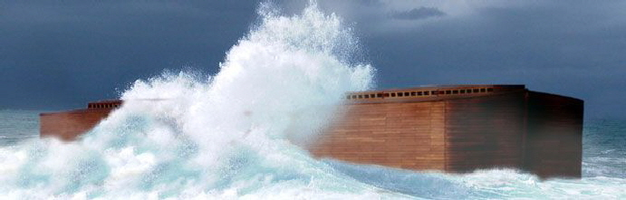
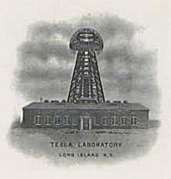
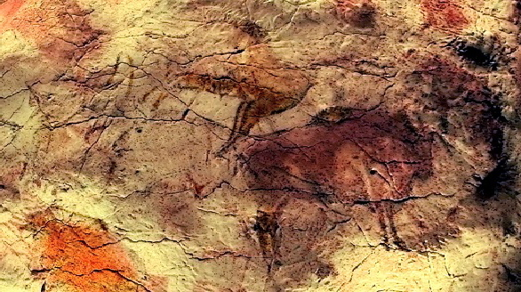
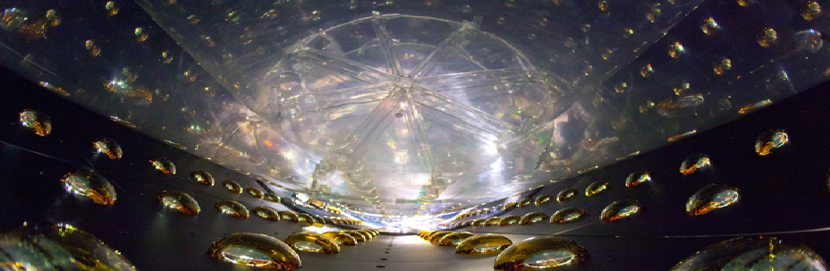
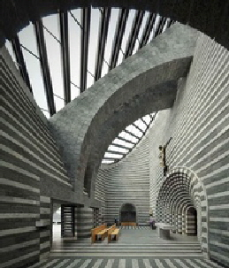
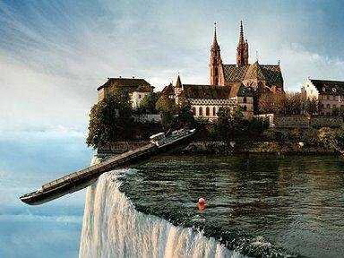
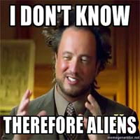
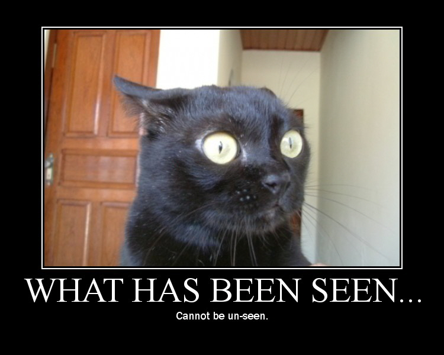
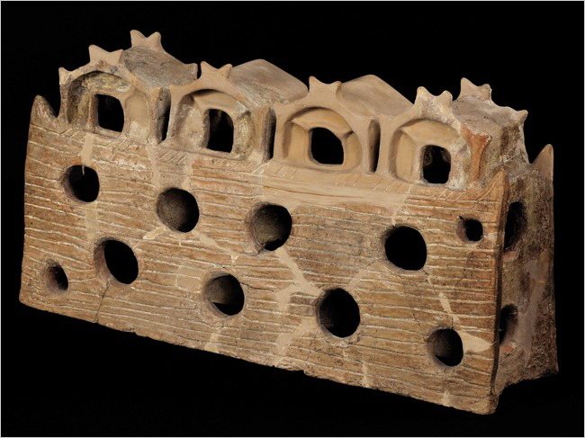

The Ultimate Plan is all about having the right impact. Not desolation where all is obliterated, but a more subtle kind of impact bordering on intrigue. Pet rocks made a major impact because they were stunningly simple and yet unexpected. The shock was that this could become a legitimate thriving business, with not a few products that were warm and emotionally touching. It was more than good marketing, it was literally minimalist art. And it made great money for a time, like so many viral products and videos and tweets these days: a few moments in the sun, combined by someone with creativity and management and passion into a real business model. Productive? What is more productive than taking a bunch of rocks from the ground and adding intangible value, turned into a multi-million dollar business?
Taking a vision (however stupid at first) and engineering it into a feasible plan with a business model is our planning definition of visioneering:
Here are just a few random samples: executable visions can come from a vast variety of places and insights. Architects do visioneering all the time, product architects would do well to add more vision into their configurations, artist do well to add more business acumen into their art, moreso than most people realize: the starving artist is an entrepreneur looking for acceptance, preferably commercially viable. Some of these images will be obvious in their relationship to illustrating a business planning point, some will seem altogether inscrutable, but many are memorable nevertheless, with an intrinsic intrigue that has led to successful business architectures and products. We may write a book about some of these vision images someday. For the moment, ponder your initial puzzlement on why these particular images are seemingly thrown up on the wall: creativity IS.








